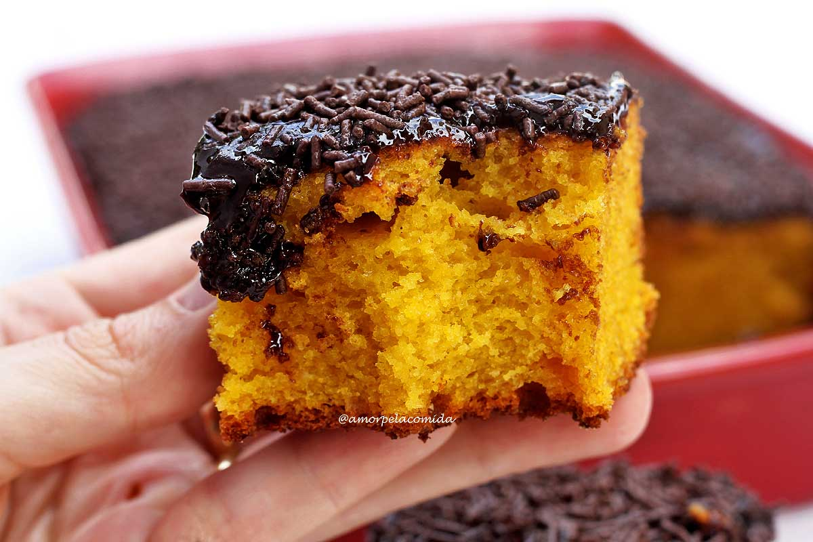

Home Bolo de Cenoura Bolo de Chocolate Strogonoff
Bolo de Cenoura
Ingredientes
- 4 Cenouras
- 1 Copo de Leite
- Fermento
- 1 copo de óleo
- 2 xícaras de açúcar
- 1 pote de manteiga
- 1 lata de leite condensado
- 12 ovos
- Fazer um brigadeiro e jogar em cima 
- Pré aqueça o forno
- Limpar a forma
- Bata tudo no liquidificador
- Jogar a massa em uma tigéla"Mas deixe um pouco de massa para comer"
- Untar a forma
- Assar por 1 horas